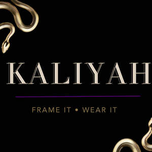

Trade Mark Journal No.2025/029 18 July 2025
UK00004165921 26 February 2025 (20,25,41,42)

- Class 20
- Sculptural furniture for displaying wearable art; various types of display stands and mounts ; art frames; mannequins; artistic display installations made of acrylic , metal, wood, paper, rock, plastic, and composite materials; collectible furniture; artistic storage solutions for fashion; pedestals and stands for exhibiting fashion art; wall-mounted art displays; freestanding art displays; artistic storage units for collectibles; museum display solutions for wearable art; digital display units for virtual fashion and NFTs ; physical and virtual display solutions for homes, hotels, galleries, museums , exhibitions , and events; bespoke framing solutions for sculptural corsets; decorative art mounts; art display cases; wall mounted art display components; decorative art supports; art display panels; art display surfaces , tables, countertops, and platforms; modular art display units; decorative display fixtures ; picture frames; display cases; decorative display stands; art display mounts.
- Class 25
- Wearable art clothing; sculptural clothing made from composite materials; clothing embellished with decorative elements; men’s and women’s clothing; tops; dresses; blouses; headgear; footwear; sweaters; decorative harnesses; corsets; fashion accessories; belts; ornamental clothing; bespoke clothing; luxury apparel; ready-to-wear fashion collections; avant-garde fashion pieces; couture clothing.
- Class 41
- Digital and physical fashion experiences; Entertainment including red carpet appearances; provision of entertainment; Provision of digital and physical fashion experiences; Entertainment services including red carpet appearances; arranging and conducting charity events, galas, award shows, fashion shows; provision of theatrical performances; production of music videos; film productions; provision of cultural exhibitions; provision of digital fashion showcases. Gallery services; museums services; provision of public exhibitions; online games.
- Class 42
- Provision of virtual clothing and accessories for use in the digital display units/metaverse; development of augmented reality (AR) and virtual reality (VR) environments; Research and design relating thereto; industrial analysis and research services; design and development of computer hardware and software.
KALIYAH LTD